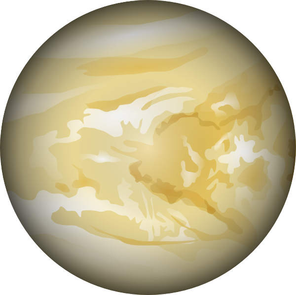

Venus | Венера
Вторая планета солнечной системы - Венера.
Вторая от Солнца планета, атмосфера которой почти полностью состоит из углекислого газа. Её часто называют Утренней звездой и Вечерней звездой, потому что она первой из звёзд становится видна после заката, так же как и перед рассветом продолжает быть видимой и тогда, когда все остальные звёзды скрылись из поля зрения. Процент диоксида углерода составляет в атмосфере 96%, азота в ней сравнительно немного – почти 4% и в совсем незначительном количестве присутствует водяной пар и кислород.
Подобная атмосфера создает эффект парника, температура на поверхности из-за этого даже выше, чем у Меркурия и достигает 475 °C. Считается самой неторопливой, венерианские сутки длятся 243 земных дня, что почти равно году на Венере – 225 земных дней. Многие называют её сестрой Земли из-за массы и радиуса, значения которых очень близки к земным показателям. Радиус Венеры составляет 6052 км (0,85% земного). Спутников, как и у Меркурия, нет.
Credits:
website: Drobkov Kirill
information: Pilyavets Dominik